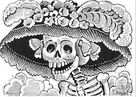

Extra facts about this celebration
-
This celebration is around 3,000 years old. The origin of this celebration dates back to the time of the Aztecs, who on this date paid homage to the souls of the deceased who year after year visited the world of the living.
As part of a great tradition, in Mexico we celebrate the Day of the Dead on November 1 and 2 of each year. The first day the “angels” are honored; little children who have left the earth before their time. The second day is dedicated to the deceased adults. -
3 types of altars
The altar of the dead is one of the fundamental elements of the celebration of the Day of the Dead, it represents the vision that pre-Hispanic cultures had of death. There are 3 types of altars:
2 Levels: Represents heaven and earth 3 Levels: Represent heaven, earth and the underworld 7 Levels: They represent the levels that the soul goes through in order to reach rest and spiritual peace.
Each altar of the Day of the Dead must represent the 4 elements: Water (in a clay pot), earth (with fruits obtained from it), fire (with candles) and wind (it is achieved with confetti). -
Cempasuchil flower (marigold flowers). Its use has origins in Malinalco, a city in the State of Mexico that dates from pre-Hispanic times, where its inhabitants placed it on their altars because its color supposedly harbored the heat of the sun’s rays. It is for this reason that paths with their petals are placed in order to guide the deceased on their way.
-
The sugar skulls Sugar skulls cannot be absent from altars, they are a tradition of the Day of the Dead and it is believed that they are the favorite food of the deceased spirits. These are a form of “present” that is placed on altars and symbolizes life after death.

-
The Catrina The catrina is the most representative figure of this celebration, it was created by José Guadalupe Posada, in which the image of a skull dressed in a feathered hat in European fashion at the time is represented. Later it was renamed by Diego Rivera.
-
On November 7, 2003, UNESCO gave the title of World Heritage Site to the Day of the Dead. A tradition full of colors and feelings, which although, like other traditions, has evolved over the years, continues and will continue to hold together the communities that during these days are ready to celebrate those loved ones who already they are not with us.